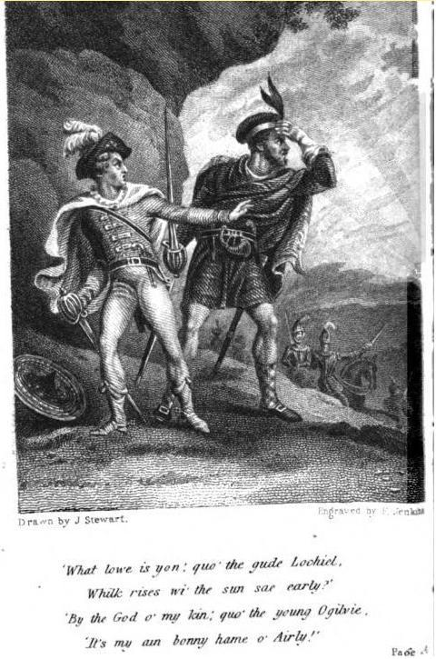

Young Airlie
The Highland Clans : Banditry and Feudism
Les luttes entre clans des Highlands
Followed by two variants

Tune
from Hogg's "Jacobite Relics" 2nd Series N°75 page 151
Sequenced by Ch.Souchon
Contributed by Paul Ernst
Sheet music- Partition
|
To the tune: "Trusting to a note in Cromek's Collection, I never doubted that this was a song of 1745, and reserved it for this volume, and even for this latter division of it. I find, however, in searching for the event to which it relates, that it is the very oldest Scots song in the collection, being one of 1640." James Hogg's note to this song in his "Jacobite Relics", Volume II. |
A propos de la mélodie: "Sur la foi d'une note insérée dans le Recueil de Cromek, j'étais certain qu'il s'agissait d'un chant datant de 1745 et le destinais donc au présent volume et à la 2ème partie de celui-ci. Il apparaît en fait, si l'on recherche l'événement auquel il se rapporte, que c'est là le plus ancien chant en langue Scots du recueil, puisqu'il remonte à 1640." James Hogg's note to this song in his "Jacobite Relics", Volume II. |

|
YOUNG AIRLIE [1] 1. "O ken ye aught o' gude Lochiel,[2] Or ken ye aught o' Airlie? They've buckled on their harnessing, And aff an' away wi' Charlie." "Bring here to me," quo' the hie Argyle, [3] My bands in the mornin' early: We'll raise a lowe shall glent to heav'n I' the dwelling o' young Lord Airlie." [4]
2. "What lowe is yon," quo' the gude Lochiel,
3. "Its' nae my ha', nor my lands a' reft,
|
LE JEUNE AIRLIE [1] 1. - Des nouvelles du fier Lochiel? [2] Des nouvelles d'Airlie? - Ils ont revêtu leur harnois, Pour partir avec Charlie. - "Que l'on se réunisse ici, -Dit Argyll- "à l'aurore: [3] Nous préparerons l'incendie Du château du jeune Lord Airlie." [4]
2. - Quel est ce feu, dit Lochiel,
3. "Ce n'est pas mon bien consumé,
(Trad. Ch.Souchon(c)2004) |
|
[1] This song relates an incident highlighting the territorial disputes and permanent warfare between certain clans. Here is the description of these events by James Hogg: "In that year (1640), James, earl of Airly, left Scotland, to avoid being compelled to subscribe the covenant. The Estates of Parliament being informed of his departure, ordered the earls of Montrose and Kinghorn to take possession of his house. On their coming to Airly castle, in June 1640, they summoned Lord Ogilvy to surrender it, being a place of very great natural strength, well manned, with all sorts of ammunition and provisions. Lady Ogilvy answered, that her husband was absent, and had left no orders with her to give up the house to any subject, and that she would defend the same to the utmost of her power till her husband returned from England. After interchanging some shots, the assailants desisted from the attack. The estates of parliament then ordered the marquis of Argyle to proceed against it; he accordingly raised no less than 5000 men for that purpose : but when lord Ogilvy heard of his coining with such irresistible force, he wisely left Airly castle with all his men. Argyle demolished Airly and Forther, the two principal seats of the earl of Airly, destroyed every thing he could, and plundered the tenants of all their goods, corn, and cattle." [2] Sir Ewen Cameron of Lochiel was the grand father of the famous Gentle Lochiel who was the first of the major chieftains to join Charles Edward Stuart, the Young Pretender, in the Jacobite uprising in 1745. [3] The 8th Earl of Argyll, Chief of Clan Campbell, became, with Oliver Cromwell's victory in England, the effective ruler of Scotland. Upon the restoration, the marquess offered his services to King Charles II but was charged with treason and executed on 27th May 1661. When on the scaffold he took out of his pocket a little rule and measured the block. As it did not lie even, he pointed out the defect to the carpenter, had it rectified and them calmly submitted to his fate. He thus set an example of equanimity and fortitude that was followed by Lord Lovat. [4] "The lands of Airlie, in the District of Angus, in the southeastern Highlands and extending into the Lowlands were owned by the Ogilvies, a strongly Jacobite clan. The incident referred to in this song happened during the Civil War(in 1640) and the "Charlie" mentioned in it is King Charles I ...." (Note by Mr Paul Ernest) [5] James Ogilvy (c. 1593-1666), 1st Earl of Airlie was a loyal partisan of the king and he joined Montrose in Scotland in 1644. The destruction of his castles of Airlie and of Forther in 1640 by the Earl of Argyll, who "left him not in all his lands a cock to crow day," gave rise to this song. The Ogilvies later had their revenge for this act, by setting fire to Castle Campbell near Dollar. |
[1] Ce chant a trait à un incident qui illustre les démêlés territoriaux et l'état de guerre permanent entre certains clans. Voici comment James Hogg relate ces événements: Cette année-là (1640), James comte d'Airly, quitta l'Ecosse pour ne pas à avoir à adhérer au Covenant. Les Etats du Parlement, dès qu'ils eurent vent de son départ, chargèrent les comtes de Montrose et de Kinghorn de s'emparer de sa demeure. Dès leur arrivée au château d'Airly, en juin 1640, ils sommèrent Lord Ogilvy de déguerpir, s'agissant d'une place forte occupant un site naturel inexpugnable et possédant une solide garnison, bien pourvue en munitions et en provisions. Lady Ogilvy répondit que son époux était absent et qu'il ne lui avait pas laissé d'instructions pour abandonner les lieux à qui que ce soit et qu'elle les défendrait bec et ongles, jusqu'à ce qu'il rentre d'Angleterre. Après quelques échanges de coups de feu, les assaillants vidèrent la place. Le Parlement chargea alors le marquis d'Argyll de revenir à la charge. Celui-ci constitua pour ce faire une armée de pas moins de 5000 hommes. Mais lorsqu'Ogilvy apprit qu'il arrivait avec de telles forces, il jugea plus prudent de quitter Airly avec tous ses occupants. Argyll se mit en devoir de démolir Airly, puis Forther, les deux principaux châteaux du comte d'Airly, de détruire tout ce qui lui tombait sous la main et de livrer au pillage les biens, les récoltes et les troupeaux de ses métayers." [2] Sir Ewen Cameron de Lochiel était le grand-père du fameux Lochiel le Gentilhomme qui fut le premier parmi les chefs de grands clans à se rallier à Charles Edouard Stuart, le Jeune prétendant, lors du soulèvement jacobite de 1745. [3] Le 8ème Comte d'Argyll, Chef du Clan Campbell, devint, lors de la victoire de Cromwell en Angleterre, le véritable maître de l'Ecosse. Lors de la restauration, le Marquis offrit ses services au Roi Charles II mais il fut convaincu de haute trahison et exécuté le 27 mai 1661. Une fois sur l'échafaud, il tira de sa poche une petite règle et mesure le billot. Comme il était bancal, il appela le menuisier qui y mit bon ordre. Alors calmement il subit son supplice. Son exemple d'équanimité et de courage fut suivi par Lord Lovat. [4] "Les terres d'Airly, dans le District d'Angus au sud-est des Highlands, se prolongent dans les Lowlands. Elles appartenaient aux Ogilvy, un clan aux fortes attaches Jacobites. L'incident auquel ce chant fait allusion se déroula pendant la Guerre Civile (en 1640) et le "Charlie" en question est le Roi Charles I ..." (Note de M. Paul Ernest) [5] James Ogilvy (vers 1593-1666), 1er Comte d'Airly fut un loyal partisan du roi Charles Ier et se joignit à l'armée de Montrose en 1644. La destruction de ses châteaux d'Airly et de Forther en 1640 par le Duc d'Argyll qui ne "lui laissa sur toutes ses terres pas un seul coq pour saluer le jour", est à l'origine de ce chant. Les Ogilvy prirent leur revanche en mettant le feu au Château des Campbell près de Dollar. |
|
The 2nd volume of "Jacobite Relics" include two more versions of this song, introducing new elements: 1° The Cromek version, with the mistake about Charlie. Lady Ogilvy's rape by Argyll is described hardly in a cryptic way. 2° An anonymous "modern" version where the nefarious Argyll tries to take advantage of the situation and makes advances to Lady Ogilvy who repels them. |
Le 2ème volume des "Reliques Jacobites" contient deux autres versions de ce chant qui introduisent de nouveaux éléments: 1° La version de Cromek, où l'on trouve l'erreur à propos de Charlie. Le viol de Lady Ogilvy par Argyll y est décrit de façon à peine cryptée. 2° Une version anonyme "moderne" dans laquelle l'abominable Argyll essaye de profiter de la situation pour faire des avances à Lady Olgilvy qui les repousse. |
|
SONG LXXVI page 152 of Jac. Rel. 2nd Vol. "Is one on the same subject from the verses in Cromek and a street ballad collated." (James Hogg) YOUNG AIRLY 1. It was upon a day, and a bonny simmer day, When the flowers were blooming rarely, That there fell out a great dispute Between Argyle and Airly. Argyle has rais'd an hundred men, An hundred men and mairly, And he's away down by the back o' Dunkel', To plunder the bonny house o' Airly. 2. The lady look'd o'er her window, And O but she sigh'd sairly, When she espied the great Argyle Come to plunder the bonny house o' Airly ! " Come down, come down now, Lady Ogilvie, " Come down and kiss me fairly." " No, I winna kiss thee, fause Argyle, " Though ye sudena leave a stannin stane o' Airly." 3. He took her by the middle sae sma', " Lady, where is your dowry ?" " It's up and down by the bonny burn side, " Among the plantings o' Airly." They sought it up, they sought it down, They sought it late and early, And they fand it under the bonny palm tree That stands i' the bowling-green o" Airly. 4. " A favour I ask of thee, Argyle, " If ye will grant it fairly; " O dinna turn me wi' my face " To see the destruction o' Airly." He has ta'en her by the shouther-blade, And thrust her down afore him, Syne set her on a bonny knowe tap, Bade her look at Airly fa'ing. 5. " Haste, bring to me a cup o' gude wine, " As red as ony cherry: " I'll tak the cup and sip it up; " Here's a health to bonny Prince Charlie! " O I hae born me eleven braw sons, " The youngest ne'er saw his daddie, " And if I had to bear them again, " They a' should gang wi' Charlie. 6. " But if my gude lord were here this night, " As he's awa wi' Charlie, " The great Argyle and a' his men " Durstna plunder the bonny house o' Airly. " Were my gude lord but here this day, " As he's awa wi' Charlie, " The dearest blude o' a' thy kin " Wad sloken the lowe o' Airly." |
CHANT LXXVI page 152 des Rel.Jac.Vol.2 "Un chant sur le même sujet qui combine des couplets tirés de Cromek et une chanson des rues." (James Hogg) LE JEUNE AIRLY 1. Un jour, un joli jour d'été Où la nature était en fleurs, Un grand différend éclata Entre Argyll et Airly. Argyll avait levé cent hommes, Cent hommes ou plus peut-être, Et pris la route de Dunkeld Pour piller le beau manoir d'Airly. 2. La dame était à sa fenêtre. Elle pousse un profond soupir En voyant que le grand Argyll Vient piller le manoir d'Airly! "Descendez, Lady Ogilvy! Venez me donner un baiser!" "Je n'en ferai rien, vil Argyll Dussiez-vous ne laisser pierre en place." 3. Il saisit sa taille si fine, "Dame votre dot où est-elle?" "En amont et en aval du joli ruisseau, Parmi ce qui pousse à Airly." On fouille l'amont. on fouille l'aval, On fouille le matin, On fouille le soir, Et on la trouve enfin sous le joli palmier Qui se dresse sur le boulingrin d'Airly. 4. "Je vous demande une faveur, Argyll, Je vous prie de me l'accorder; Ne tournez pas mon visage Pour me forcer à voir la destruction d'Airly." Il l'a saisie par les épaules Et l'a jetée à terre devant lui, Puis l'a trainée au sommet d'un mamelon En lui ordonna de regarder Airly s'effondrer. 5. "Vite, apportez-moi un verre de bon vin, Aussi rouge que la cerise: Je saisirai le verre et le viderai d'un trait A la santé du brave Prince Charles! O j'ai mis au monde onze beaux garçons. Le dernier n'a jamais vu son père, Et si c'était à recommencer, Ils partiraient tous avec Charles." 6. "Si mon gracieux seigneur était ici ce soir Au lieu d'être au loin auprès de Charles, Le grand Argyll et sa clique N'oseraient pas piller le manoir d'Airly. Si mon gracieux seigneur était ici ce jour Au lieu d'être au loin auprès de Charles, Avec le meilleur sang de toute sa race, Il éteindrait l'incendie d'Airly. |
|
SONG XI page 411 of Jac. Rel. 2nd Vol. "Is modern and has been published; but I don't know the author." (James Hogg) THE LADY LOOKED FRAE HER HA' 1. The lady looked frae her ha', Her thoughts were sad and dreary, To think her lord was far awa, O wow! but she was eerie. " What means now a' that warlike din, " Spears I see glancin' clearly. " I wish my lord, wi' kith and kin, " Were near the towers o' Airlie. 2. " O gin my lord and his brave men " Kenned now a fae was near me, " Soon wad he speed o'er hill an' glen, " Wi' his brave clan to cheer me. " O yon's Argyle's proud crest I see " Wave on yon hill sae clearly ; " Weel kens he brave Lord Ogilvie " Is far awa frae Airlie." 3. " O why now o'er that bloomin' cheek " Fa's the bright tear sae pearly ? " O let me dry that e'e sae meek, " For I do lo'e thee dearly. " Now gie me but thy milk white hand, " An' three sweet kisses fairly, " An' I will gie my men command " To spare the house o' Airlie." 4. " O proud Argyle, great is thy power ; " Ye ken my lord's wi' Charlie; " An' now ye come to waste my bower, " But ye may rue it sairly: " Gae fight wi' men, but never let " The warld at you ferlie! " Ae kiss frae me ye ne'er shall get, " Though it should save sweet Airlie. |
CHANT XI page 411 de Rel. Jac. 2ème vol. "Chant moderne, déjà publié, mais dont je ne connais pas l'auteur." (James Hogg) LA DAME ETAIT A SA FENETRE 1. La dame était à sa fenêtre, Et roulait de sombres pensers; Sachant comme était loin son maître, Qui n'eût été, comme elle, inquiêt? "Que me veut tout cet attirail Guerrier que je vois et qui luit? Si mon époux pouvait paraître Et rejoindre bientôt Airlie!" 2. "O si mon époux et ses hommes Savaient qu'approche un ennemi, Comme il accourrait en personne Avec ses braves jusqu'ici. N'est-ce pas l'étendard d'Argyll Qu'on voit là-haut flotter au vent? Lord Ogilvie, mais le sait-il, Est bien loin d'Airlie maintenant". 3. "Pourquoi donc sur cette joue blême Vois-je cette larme perler? Ces yeux si doux, moi qui vous aime, Permettez-moi de les sêcher. Donnez-moi donc votre main blanche Et accordez-moi trois baisers. A mes gens je donnerai l'ordre De partir sans rien dévaster." 4. "Arrogant Argyll dont la force Tient à l'absence d'un mari. Il se peut qu'un jour tu regrettes D'avoir ainsi ruiné mon nid: Combats les hommes et ne t'avise Jamais plus de jouer les mondains. Et ce baiser je le refuse Quand même Airlie le vaudrait bien. Traduction Christian Souchon (c)2010 |